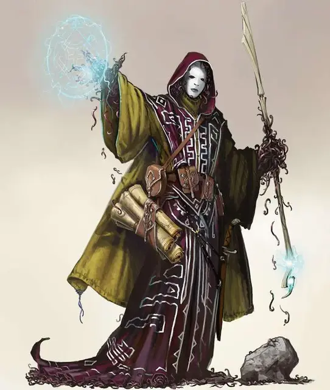

Личиночный маг звёздных порождений
Star Spawn Larva Mage
Средняя Аберрация, хаотично-злая

Класс Доспеха 16 (природный доспех)
Хиты 168 (16к8 + 96)
Скорость 30 футов
| мод | спас | ||
|---|---|---|---|
| СИЛ | 17 | +3 | +3 |
| ЛОВ | 12 | +1 | +6 |
| ТЕЛ | 23 | +6 | +6 |
| мод | спас | ||
|---|---|---|---|
| ИНТ | 18 | +4 | +4 |
| МДР | 12 | +1 | +6 |
| ХАР | 16 | +3 | +8 |
Навыки Восприятие +6
Сопротивление урону холод; дробящий, колющий, рубящий от немагических атак
Иммунитет к урону психическая энергия
Иммунитет к состояниям окаменение, опутанность, отравление, паралич, очарование, испуг
Чувства тёмное зрение 60 футов, пассивное Восприятие 16
Языки Глубинная речь
Опасность 16 (15000 опыта)
Бонус мастерства +5
Среда обитания Горы
Особенности
Врождённое колдовство. Базовой характеристикой личиночного мага является Харизма (Сл спасброска от заклинания 16, +8 к попаданию атаками заклинаниями). Он может накладывать следующие заклинания, не нуждаясь в материальных компонентах:
• Неограниченно: мистический заряд [eldritch blast] (3 заряда, +3 к каждому броску атаки), малая иллюзия [minor illusion]
• 3/день: подчинение чудовища [dominate monster]
• 1/день: круг смерти [circle of death]
Возвращение к червоподобной форме. Когда хиты личиночного мага опускается до 0, он распадается на части роями насекомых в той же клетке. В случае, если эти насекомые не будут уничтожены, личиночный маг восстановится через 24 часа.
Действия
Размашистый удар. Рукопашная атака оружием: +8 к попаданию, досягаемость 10 фт., одна цель. Попадание: 7 (1к8 + 3) дробящего урона, и цель должна преуспеть в спасброске Телосложения Сл 19, иначе станет Отравленной до конца её следующего хода.
Чума червей (перезарядка 6). Каждое существо, отличное от звёздного порождения в пределах 10 фт. от личиночного мага должно преуспеть в спасброске Ловкости Сл 19, иначе получит 22 (5к8) урона некротической энергией, а также станет Ослеплённой и Опутанной массами копошащихся червей.
Попавшая под действие эффекта цель получает 22 (5к8) урона некротической энергией в начале каждого хода личиночного мага. Существо может повторять спасбросок в конце каждого своего хода, завершая эффект в случае успеха.
Реакции
Подпитка слабостью. Когда существо в пределах 20 фт. от личиночного мага проваливает спасбросок, личиночный маг получает 10 временных хитов.
Легендарные действия
Личиночный маг может совершить 3 легендарных действия, выбирая из представленных ниже вариантов. За один раз можно использовать только одно легендарное действие, и только в конце хода другого существа. Личиночный маг восстанавливает использованные легендарные действия в начале своего хода.
Заговор (стоит 2 действия). Личиночный маг творит один заговор.
Размашистый Удар (стоит 2 действия). Личиночный маг совершает атаку Размашистым ударом.
Подпитка (стоит 3 действия). Каждое существо, оплетённое Чумой червей, получает 13 (3к8) урона некротической энергией, а личиночный маг получает 6 временных хитов.
Описание
Материальный план представляет только небольшой кусочек мультивселенной. За пределами хорошо изученных планов существования лежат измерения, что смертельно опасны для смертных. Некоторые настолько враждебны, что даже мгновенного контакта с таким местом достаточно, чтобы свести смертного с ума. Но есть существа, для которых подобные измерения являются родными: существа, что вечно голодают, ищут, завывают, а иногда ещё и видят сновидения. Эти Древние старше всех прочих смертных рас и всегда внушают ужас разумным гуманоидам.
Однако каким сильным не было желание вторгнуться и захватить Материальный План, Древние не могут или не хотят покидать свои измерения. Одни заточены в своих измерениях внешними силами, некоторые неразрывно связаны со своими домашними реальностями, а другие просто не могут найти даже подобие выхода из собственного измерения.
Предвестники рока. Существа известные как порождения звёзд – это предвестники, рядовые солдаты, или лейтенанты Древних, способные принимать форму гуманоида, что может путешествовать по Материальному Плану. Чаще всего они пребывает следом за кометой...или, возможно, этот феномен предупреждает о том, что поблизости есть порождение звёзд, и оно доступно для общения. Если знамения верны, то колдуны и культисты спешат собраться вместе, читают вслух пренебрежительные слова и проводят безумные ритуалы, что направляют на верный путь пылающее порождение звёзд в этот мир.
Личиночный маг звёздных порождений.Личиночный маг – кошмарный сплав смертного тела и потусторонней субстанции. Когда могущественный культист червеподобных сущностей таких как Кайусс или Кезеф (обычно колдун или другой заклинатель) связывается с кометорождённым посланцем Древних, вестник последнего может слиться с сознанием обратившегося, чтобы породить личиночного мага.
Сам культист не переживает трансформацию, и то существо, что замещает его, совершенно чужеродно.